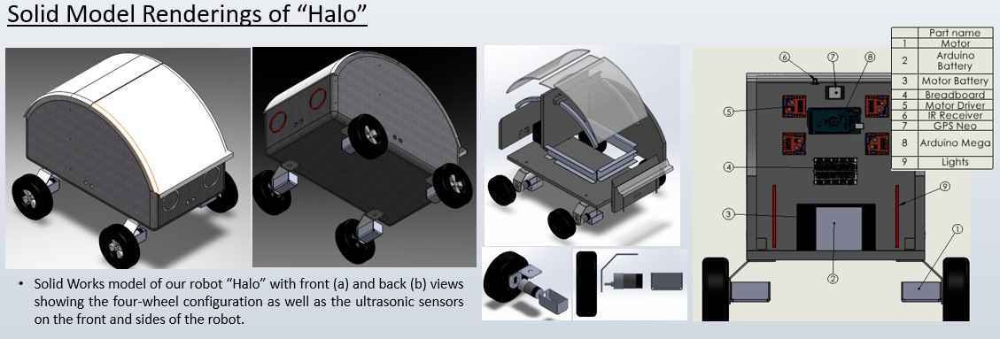
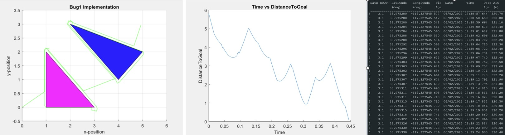
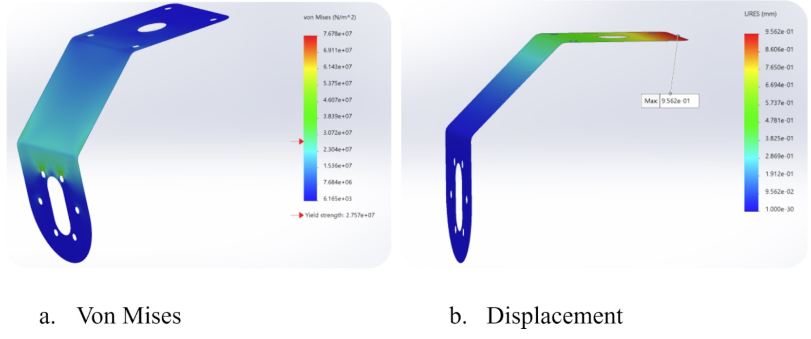

I worked as an engineering intern for the Eastern Municipal Water District.
The Autonomous Delivery Robot project aimed to revolutionize campus logistics by creating a robot capable of efficiently daelivering supplies and food to students and faculty at the Univeristy of California, Riverside. The comprehensive project spanned various phases, from problem definition to design conceptualization, selection, and validation. The robot's design emphasized autonomous navigation, obstacle avoidance, and manual control features. It included a compact body with an insulated compartment capable of carryinga payload of atleast 20 pounds, ensuring the secure delivery of diverse items while navigating the campus terrain autonomously.
The robot employed skid steering, ultrasonic sensors, and GPS for navigation. Through a series of rigorous selection phases we determined optimal solutions for components like lids, steering mechanisms, navigation systems and power sources. Through protyping and simulations, we demonstrated basic functionalities such as object detection and avoidance, sensor based navigation, and showcasing a promising autonomous system.
The project identified areas for future enhancements and applications, including the use of more durable and lightweight materials, integrating more advanced sensors like LiDAR and powerful processers such as Raspberry Pi for improved mapping and navigation, and further developing the software and mechatronics to achieve complete autonomy, ensuring efficient and reliable deliveries across the UCR campus.
The body and construction of the autonomous delivery robot are designed for functionality, durability, and safety while considering the needs of navigation and payload accommodation. The robot's body is compact, built to house the essential components and cargo, ensuring efficient movement while maximizing the available space. Its power source relies on electricity, employing 4 DC motors for precise skid steering maneuvers across the campus landscape. Although our prototype was crafted from wood, the ultimate design transitioned to a robust carbon fiber body complemented by a fiberglass lid, enhancing resilience and protection for transported items.
Our robot efficiently employed an Arduino to gather data from the GPS sensor, process the information for optimal path determination, and orchestrate precise control over the four motors to execute the desired motion. Furthermore, the Arduino played a pivotal role in managing the robot's object detection system, promptly identifying obstacles and directing avoidance protocols for seamless navigation.
The navigation system of the autonomous delivery robot involves a multi-layered approach for precise and efficient movement across the campus environment. It utilizes a GPS module to establish the robot's global position, enabling it to create a waypoint navigation system towards the intended destination. This GPS-driven system acts as the primary guide, providing the robot with a foundational understanding of its current location and the target area. Moreover, the robot incorporates an intelligent routing algorithm, specifically the Breadth First Search Algorithm, to calculate the optimal path from its present position to the desired location. This algorithm facilitates the determination fo the most direct and time-efficient route available within the campus terrain.
In addition to GPS-driven navigation, the robot integrates 4 ultrasonic sensors strategically positioned to continuously scan and detect obstacles along its path. These sensors serve as a crucial role in identifying an obstructions or potential hazards, enabling the robot to implement real-time object avoidance protocols. Furthermore, these sensors allow for dynamic adjustments to the route, ensuring adaptability when faced with unexpected obstacles, such as ongoing construction, to maintain an uninterrupted and safe navigation path.
SolidWorks was instrumental in modeling the stress and strain on the suspension system brackets. Instead of running simulations on the entire model, we focused on one bracket, assuming an equal distribution of weight, resulting in 8 pounds of force on an individual bracket due to a total weight of32 pound-force shared among all four brackets. Additionally, MATLAB was employed to analyze the power requirements for the motors.
These simulations generated von Mises and URES displacement plots, showcasing the maximum and minimum stresses and displacements endured by the suspension bracket. Moreover, MATLAB facilitated the analysis of the torque necessities for the motors. During the problem definition phase, we established a requirement for the robot to support a 20 pound payload. Our MATLAB calculations highlighted the need for a torque of 3.5 ft-lb after conducting a free-body diagram analysis of one wheel to determine the requesite torque and extrapolating the required torque for the motors using MATLAB.

I worked as an engineering intern for the Eastern Municipal Water District.

As a Resident Advisor, I assumed a multifaceted role dedicated to fostering a supportive and inclusive environment.

As a Group Fitness Instructor, I lead participants thorugh a set of work outs.
I would love to connect with you. Feel free to reach out for any inquiries.